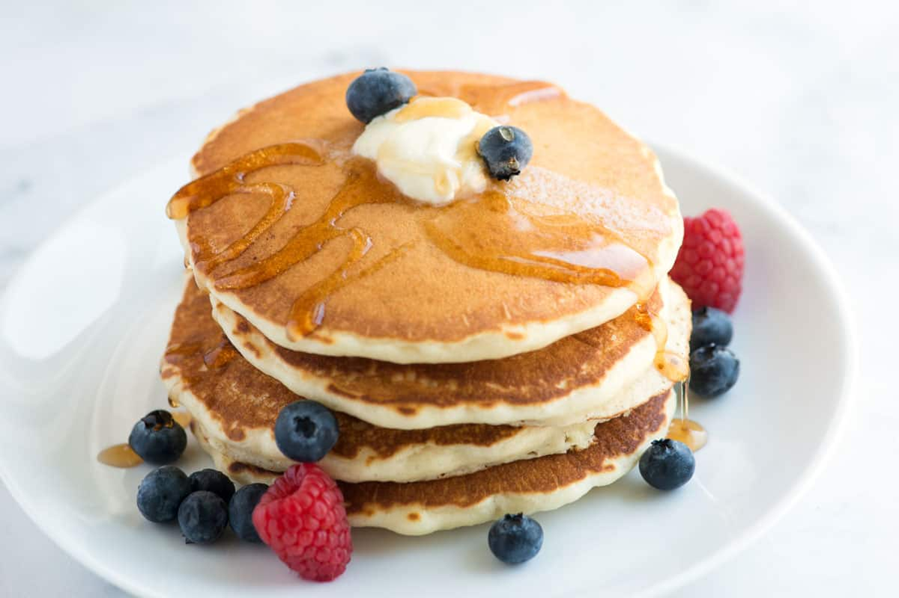

Easy Fluffy Pancake
The easiest, fluffy pancakes from scratch I’ve made! See how to make the best homemade pancake recipe using simple ingredients probably in your kitchen right now. They’re light, fluffy, and delicious!
Source:
Inspired Taste

Ingredients
- 1 ½ cups (195g) all-purpose flour, spooned and leveled
- 2 tablespoons sugar
- 1 tablespoon baking powder
- 1/2 teaspoon of fine sea or table salt, reduce to 1/4 teaspoon if sensitive to salt
- 1 ¼ cups (295ml) milk, dairy or non-dairy
- 1 large egg
- 5 tablespoons (70g) unsalted butter, plus more for skillet
- 2 teaspoons vanilla extract, reduce if sensitive to vanilla
Directions
- Melt the butter and set it aside. In a medium bowl, whisk together the flour, sugar, baking powder, and salt.
- In a separate bowl, whisk together milk, egg, melted butter, and vanilla extract. (Don’t worry if the butter solidifies slightly).
- Create a well in the center of your dry ingredients. Pour in the milk mixture and stir gently with a fork until the flour is just incorporated. A few small lumps are okay. As the batter sits, it should start to bubble.
- Place a large skillet or griddle over medium heat. Sprinkle in a few drops of water to test if it’s ready. You want them to dance around a bit and evaporate.
- Brush the skillet with melted butter (this creates crispy edges, but you can skip it if using a quality nonstick pan).
- Scoop the batter onto the skillet using a 1/4 cup measure or large cookie scoop, and spread each pancake into a 4-inch circle.
- After 1 to 2 minutes, the edges will look dry, and bubbles will form and pop on the surface. Flip the pancakes and cook for another 1 to 2 minutes until lightly browned and cooked in the middle.
- Serve immediately with warm syrup, butter, and berries.